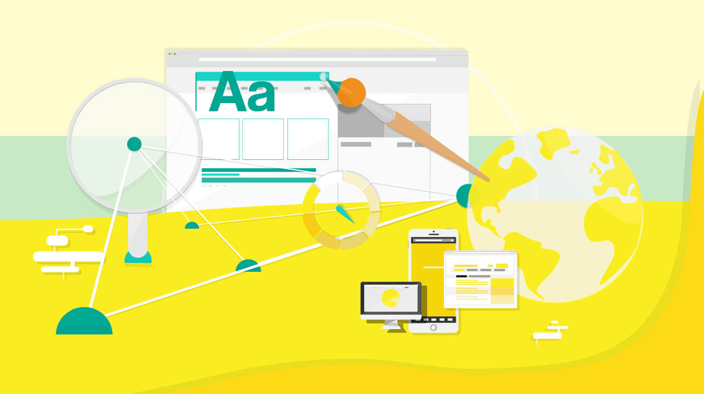

Trong đời đại hiện nay, công nghệ thông tin đang phát triển rất mạnh mẽ vì hầu hết người dùng đều sử dụng mạng internet với nhiều mục đích như: tìm kiếm thông tin, mua bán trực tuyến, khai thác dữ liệu,… Trong đó, hình thức kinh doanh online đang phát triển rất mạnh mẽ. Chính vì thế, việc thiết kế website chuyên nghiệp kinh doanh sách trên mạng là một nhu cầu cần thiết giúp các độc giả dễ dàng tìm kiếm những cuốn sách mà họ cần dùng Trong bài viết hôm nay, Datadesignsb xin gửi đến bạn đọc những kinh nghiệm trong việc thiết kế website bán sách, hy vọng có thể giúp ích cho bạn trong việc kinh doanh sau này
Bán hàng trực tuyến là một hình thức kinh doanh các sản phẩm hay dịch vụ trên mạng internet. Tận dụng ưu thế của mạng internet để tạo ra quá trình mua bán trao đổi hàng hóa. Ưu điểm của bán hàng online đó chính là không cần phải phụ thuộc vào cửa hàng, mặt bằng, nhân viên. Chỉ cần bạn xây dựng một kênh thông tin bán hàng thông qua mạng internet để tiếp cận khách hàng. Chính vì thế, thiết kế một website bán hàng trực tuyến là yêu cầu cần thiết cho hình thức kinh doanh này. Website được coi như là một cửa hàng, giúp cho bạn có thể trưng bày các sản phẩm kèm thông tin giới thiệu. Ngoài ra, website còn tích hợp các chức năng giúp cho việc mua bán diễn ra một cách nhanh chóng và tiện lợi nhất.Hầu như các loại sản phẩm đều được bày bán trên website, nếu như trước đây chủ yếu là bán quần áo, mỹ phẩm, đồ điện tử, thì giờ cả sách cũng đươc bán online. Có nhiều cửa hàng, doanh nghiệp đã thiết kế website bán sách, để phục vụ đa dạng nhu cầu mua sách của người tiêu dùng.
Lợi ích khi thiết kế website bán hàng trực tuyến Lợi ích đầu tiên khi bạn sở hữu một website bán hàng đó chính là tiếp cận khách hàng tiềm năng. Dù khách hàng ở bất cứ đâu trên thế giới, chỉ cần có mạng internet là có thể tìm thấy website bán hàng của bạn, biết đến sản phẩm và thương hiệu của công ty bạn. Từ đó, chắc chắn rằng lượng khách hàng của bạn sẽ tăng lên đáng kể. Tuy nhiên, các chức năng tiện ích bán hàng của website cũng là một yếu tố cần thiết đến việc thu hút khách hàng. Do đó, khi thiết kế website kinh doanh thứ gì, như thiết kế website bán sách online cũng cần chú ý đến các chức năng trên website, phải làm sao hữu dụng với người dụng thì việc kinh doanh mới đạt hiệu quả.
Việc sở hữu một website bán hàng chính là một hình thức marketing online tốt nhất, vừa giúp cho doanh nghiệp của bạn tiết kiệm được nhiều chi phí trong quảng bá thương hiệu vừa có thể tăng doanh thu bán hàng hiệu quả. Vì bạn không cần phải đầu tư một số tiền lớn để thuê mặt bằng làm cửa hàng, không cần phải thuê nhân viên phục vụ mà chỉ cần đầu tư một khoản tiền nhỏ để thiết kế website thì bạn đã có thể thu về nhiều lợi nhuận với hình thức kinh doanh này.
Một lợi ích vô cùng quan trọng khi thiết kế website bán hàng đó chính là giúp doanh nghiệp xây dựng và quảng bá thương hiệu sản phẩm của công ty mình. Nếu bạn muốn đạt hiệu quả trong kinh doanh và quảng bá được thương hiệu sản phẩm công ty thì bạn phải biết tận dụng một số hình thức marketing như: SEO cao cấp, facebook adwords, google adwords. Vì người dùng sẽ biết đến sản phẩm của bạn thông qua các công cụ tìm kiếm và một số trang mạng xã hội như: zalo, facebook,…
Đây có lẽ là lợi ích lớn nhất mà mọi đối tượng kinh doanh đều mong muốn. Khi sở hữu một website bán hàng chuyên nghiệp thì bạn có thể tiết kiệm được nhiều thời gian bán hàng. Khách hàng có thể truy cập vào website để lựa chọn sản phẩm và đăng ký mua hàng vào bất cứ thời gian nào trong ngày và ở bất cứ nơi nào. Các hình thức mua bán và thanh toán diễn ra nhanh chóng chỉ bằng một thao tác click chuột. Chính vì thế, doanh nghiệp tăng đượ hiệu quả kinh doanh.
Người tiêu dùng ngày nay đa số đều biết sử dụng internet nên việc tiếp cận khách hàng sẽ diễn ra dễ dàng thông qua các website. Cũng chính nhờ website mà doanh nghiệp có thể nhận được những phản hồi từ khách hàng thông qua hệ thống tin nhắn hoặc email marketing Từ đó, doanh nghiệp sẽ có thêm những sản phẩm mới phù hợp với nhu cầu của khách hàng.
Việc thiết kế website kinh doanh trực tuyến chính là một ý tưởng rất phù hợp cho thị trường Việt Nam hiện nay. Khi đã thu hút được lượng lớn khách hàng tiềm năng đến với sản phẩm của mình thì việc còn lại sẽ là của doanh nghiệp, phải đưa ra các sản phẩm chất lượng cùng dịch vụ tốt bên cạnh đó giá cả cũng phải hợp lý, các hình thức chăm sóc chu đáo thì tất nhiên lợi nhuận của công ty sẽ tăng cao.
Website bán hàng trực tuyến cần phải có bố cục càng rõ ràng càng tốt. Vì bạn cần phải để cho khách hàng thấy ngay những gì họ đang tìm kiếm nhu vậy mới thu hút được lượt truy cập. Bạn nên thiết kế website theo phong cách đơn giản, những nội dung cần được thể hiện bằng bảng điều hướng với từ ngữ ngắn gọn thì dễ dàng thu hút được người đọc.
Nếu bạn chỉ sử dụng hình ảnh để minh hoan cho sản phẩm thì khách hàng không nắm rõ được thông tin và cách thức sử dụng. Chính vì thế, kèm theo hình ảnh sản phẩm thì bạn cần phỉa có nội dung mô tả. Tuy nhiên, bạn nên sử dụng câu từ ngắn gọn, cô đọng và chỉ mô tả những gì cần thiết nhất. Tránh dài dòng sẽ làm cho khách hàng khó chịu và không muốn đọc.
Khi thiết kế website bán hàng trực tuyến thì bạn nên tạo các đường link URL bằng các biểu tượng hoặc chữ để khách hàng có thể dễ dàng chuyển đổi qua lại khi sử dụng trang web mà không cần đến các nút như: home, back, forward của trình duyệt.
Hãy tăng tốc độ tải trang lên nhanh nhất bằng các cách sau: – Giảm kích cỡ đồ họa của website. – Giảm số lượng file không cần thiết, kể cả đồ họa và HTML.
Bạn cần cung cấp một số tính năng bán hàng cần thiết và thuận tiện để khách hàng có thể hiểu rõ về sản phẩm của bạn, cũng như các phương thức đặt hàng thuận tiện nhất Điều đó sẽ tạo cho khách hàng cảm thích thú khi sử dụng sản phẩm của bạn.
Ngày nay, người dùng thường sử dụng các thiết bị di động để truy cập internet nhiều hơn sử dụng máy tính. Chính vì thế, website bán hàng của bạn phải chuẩn Seo và phù hợp với các thiết bị di động cũng như tương thích với hầu hết các trình duyệt web.